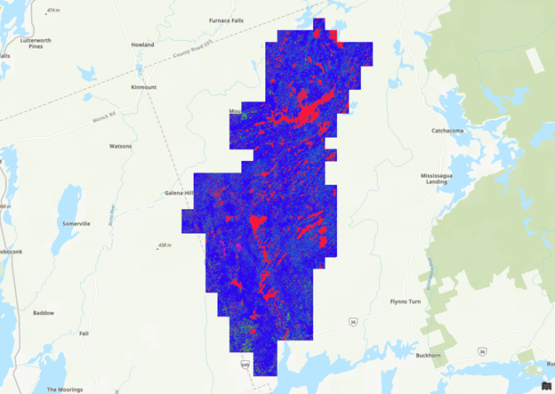
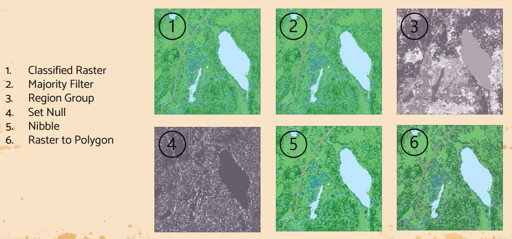
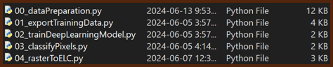

Methodology
Training Data
For this project, deep learning training datasets, or training data, can be though of as a combination of aerial imagery and vector data. Training data is used to train a deep learning model. We can make our own by combining aerial imagery and the ecological land classification data from Kawartha Conservation!
This image gives us an example of what training data could look like.

Deep Learning Model
Pixel classification is commonly used when doing land use classification, so the team trained the model to do pixel classification. ArcGIS has a 'Train Deep Learning Model tool'. By providing it our created training data it was able to train a deep learning model for us.
Model Results
The team also ran the model so that a general workflow to generalize and convert the output raster dataset to a polygon could be developed. The SCOOP 2013 imagery was classified using the 'Classify Pixels for Deep Learning' tool. This tool took around 48 hours to complete, and resulted in the raster shown below.
This isn't very helpful as is. There's waaaaaay too many misclassified pixels, and the colours aren't great. Fortunately we can fix this by using a combination of the 'Majority Filter', 'Region Group', 'Set Null', and 'Nibble' tool, and then converted to a polygon using the 'Raster to Polygon' tool. An example of this on a sample area can be seen below.
Python Scripts
The client requested that any processes done during this project be scripted in python, so the team did just that! Any geoprocessing, field management, or file management that needed to be done for this project was scripted in python.
